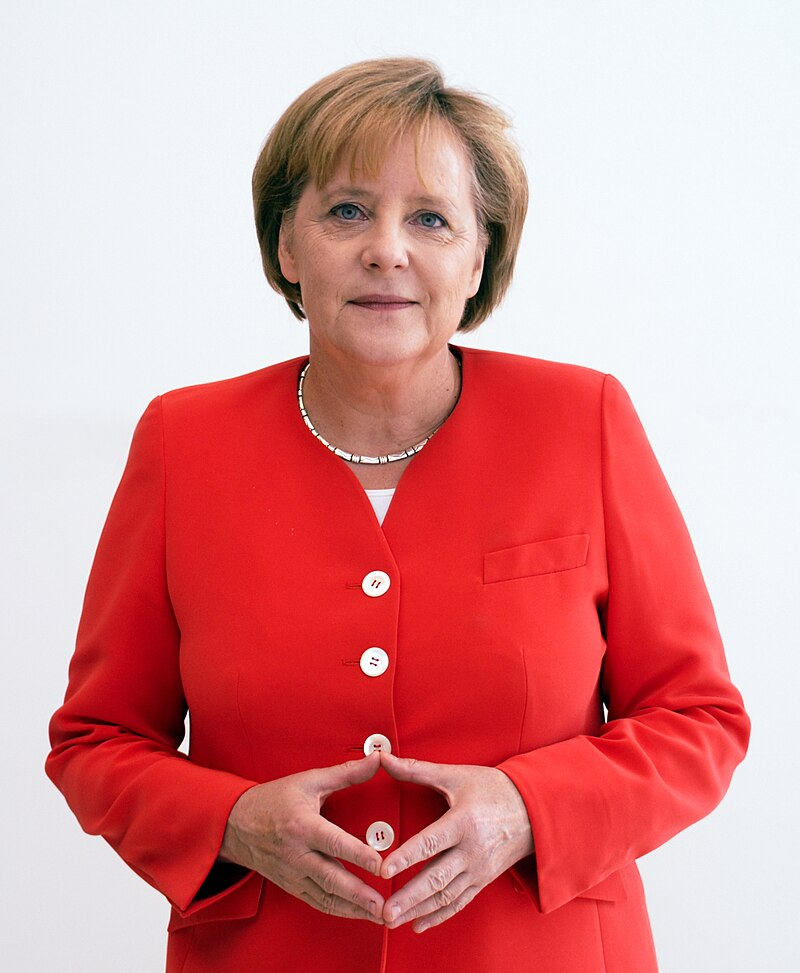

Oameni Importanți din Constanța

Angela Merkel
Angela Merkel este fostul cancelar al Germaniei și un lider influent pe plan european și internațional. A fost una dintre cele mai importante femei politice ale secolului XXI.
Citește mai mult
Constantin Brâncuși
Constantin Brâncuși a fost un mare sculptor român, cunoscut pentru contribuțiile sale semnificative în dezvoltarea artei moderne. Este celebru pentru lucrările sale minimaliste și inovative, cum ar fi "Coloana Infinitului".
Citește mai mult